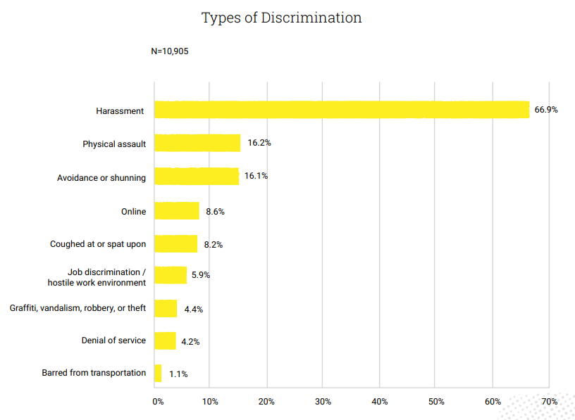
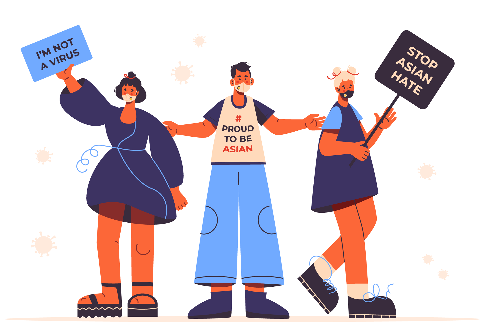

What is #StopAsianHate?
"Stop Asian Hate is a slogan and name for a series of demonstrations, protests, and rallies against violence
targeting Asians, Asian Americans, and others of Asian descent. They were held across the United States in 2021
in response to racial discrimination against Asian Americans relating to the COVID-19 pandemic."
-Wikipedia
"There has been a significant, troubling increase in anti-Asian hate crimes and bias incidents since the start
of the pandemic. Beginning in February of 2020, the Commission received a sevenfold increase in reports of
anti-Asian harassment, discrimination, and violence. It is crucial to note that hate crimes and bias incidents
have been found to be vastly under-reported so these numbers only reflect reported incidents."
-NYC Human
Rights
Data about my topic
According to Stop AAPI Hate data, verbal harassment (63.0%) continues to make up the biggest share of total incidents reported.
- Physical assault (16.2%) comprises the second largest category of total reported incidents followed by the deliberate avoidance of Asian Americans and Pacific Islanders (16.1%).
- Civil rights violations — e.g., workplace discrimination, refusal of service, being barred from transportation, and housing-related discrimination — account for 11.5% of total incidents.
- Online harassment makes up 8.6% of total incidents
Impact of Asian Hate

Business and Career
"Asian American business owners and employees have been experiencing multiple negative impacts amidst the
pandemic - including disproportionate financial loss and lower rates of government financial assistance. The
negative effects of these multiple challenges have been further compounded by anti-Asian hate targeting both
individuals and businesses."
-Anti-Asian Racism Business Impacts by Alycia Cheng, Jonathan Ong, Paul Ong
Many career opportunities are also restricted against Asians.
Physical and Verbal Threats
During the peak of the pandemic, many Asian Americans experienced racially motivated hate crimes involving physical violence and harassment
"According to the STOP AAPI (Asian American Pacific Islander) HATE Reporting Center, content analysis of 1,843 incidents yielded the following insights: Virulent animosity towards Chinese Americans, Scapegoating of China for the spread of COVID-19, Anti-immigrant nationalism, Parroting of the term “Chinese virus”, Orientalist and racist depictions of China such as "dirty" and "diseased""
Mental Health
"Hate crimes range from 'microaggressions and verbal harassment to assault and other violent hate crimes.'
Victims of hate crimes are more likely to experience symptoms of psychological distress than victims of non-hate
crimes. These symptoms include: Anger, Anxiety, Depression, Lower self-esteem, and Post-traumatic
stress"
-Krystal Jagoo
Asian American Federation (AAF)
"The Asian American Federation is a nonprofit organization working to advance the civic voice of Asian
Americans in the New York metropolitan area."
-Wikipedia

Stop AAPI Hate
"Stop AAPI Hate is a nonprofit organization that runs the Stop AAPI Hate Reporting Center, which tracks
incidents of hate and discrimination against Asian Americans and Pacific Islanders (AAPI) in the United States.
The organization was formed in 2020 in response to racist attacks on the Asian community as a result of the
COVID-19 pandemic. Stop AAPI Hate’s approach is to focus on working to end all forms of structural racism
leveled at the communities of color to truly be able to effectively address anti-Asian racism."
-Wikipedia
"Stop AAPI Hate is the nation's leading coalition documenting and addressing anti-Asian hate and discrimination
amid the COVID-19 pandemic."
-NYC Human Rights
I Still Believe in Our City
" "I Still Believe in Our City" is a public awareness campaign by multidisciplinary artist Amanda
Phingbodhipakkiya. The public awareness campaign was developed with the NYC Commission on Human Rights to combat
anti-Asian discrimination, harassment, and bias as a result of COVID-19, and launched with the support of the
NYC Department of Cultural Affairs. The art featured here is from an upcoming Art Display Case exhibition
presented in partnership with the NYC Department of Transportation's Temporary Art Program."
-NYC Human
Rights